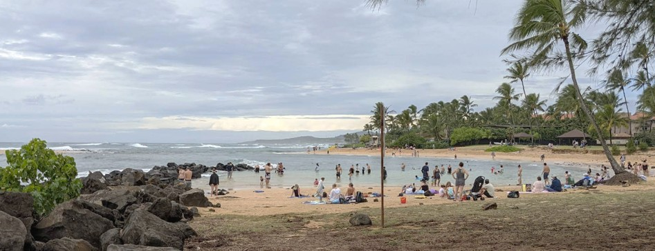

Brennecke Beach
Place: Brennecke Beach, Poʻipū, Kauaʻi
Type: Beach / public park / surfing landmark
Story it tells: A beach named for plantation physician Dr. Marvin Brennecke, whose former oceanfront home became part of Poʻipū Beach Park and later one of Hawaiʻi's premier bodyboarding destinations.

Brennecke Beach is one of Kauaʻi's best-known south shore beaches, recognized for its powerful shorebreak, clear water, and close connection to bodyboarding. The beach is named after Dr. Marvin Brennecke, a Missouri-trained physician who spent more than four decades serving Kauaʻi's plantation communities.
Dr. Brennecke graduated from Washington University School of Medicine in St. Louis in 1930 before moving to Kauaʻi the next year. He initially served as an assistant plantation physician before becoming the doctor for several of the island's major sugar operations, including McBryde, Kōloa, Waimea, Kekaha, and others. During an era when plantation doctors cared for entire workforces and their families, Brennecke became a familiar figure across western and southern Kauaʻi.
In 1934 he purchased an oceanfront parcel near Poʻipū from then sheriff deputy Anthony Vidinha (who would later become Kauaʻi mayor) and built a beach cottage two years later. A major renovation and protective seawall were completed on the morning of December 7, 1941, only hours before news of the attack on Pearl Harbor reached Kauaʻi.
Like many shoreline homes of its era, Brennecke's cottage was protected by a vertical masonry seawall built at the edge of the beach. At the time, hard seawalls were considered the best defense against erosion. Decades later, engineers would learn that such walls often accelerated beach loss.
Everything changed when Hurricane ʻIwa struck Kauaʻi on November 23, 1982. The storm completely destroyed the Brennecke home. Instead of rebuilding, Dr. Brennecke chose a different legacy. Having no children, he donated the property to his alma mater, Washington University, with the understanding that it would eventually be sold to the County of Kauaʻi for public use. The county completed the purchase in 1991, incorporating the property into the expanding Poʻipū Beach Park. The proceeds also established the Marvin Brennecke Professorship in Biological Chemistry at Washington University, allowing the land to benefit both medical research and the public.
The shoreline continued to evolve. By the late 1990s, heavy surf had destroyed the old seawall. The county replaced it with a sloped boulder revetment that dissipated wave energy instead of reflecting it. The redesign helped stabilize the shoreline and encouraged the gradual recovery of the beach's shallow sandbar.
Meanwhile, Brennecke Beach earned an entirely different reputation. During the 1970s and 1980s it became one of the proving grounds for bodyboarding, attracting pioneers including Mike Stewart, Ben Severson, and Jack "The Ripper" Lindholm. Because the cove is compact and wave riders often launch directly from the shorebreak, traditional hard surfboards have long been prohibited, leaving the break almost exclusively for bodyboarders and bodysurfers.
Today, Brennecke Beach reflects several chapters of Kauaʻi's history at once. It recalls the plantation era through the physician whose name it bears, demonstrates changing approaches to coastal engineering and shoreline management, and remains one of Hawaiʻi's iconic bodyboarding beaches, where a private family property became a public place enjoyed by generations of residents and visitors.